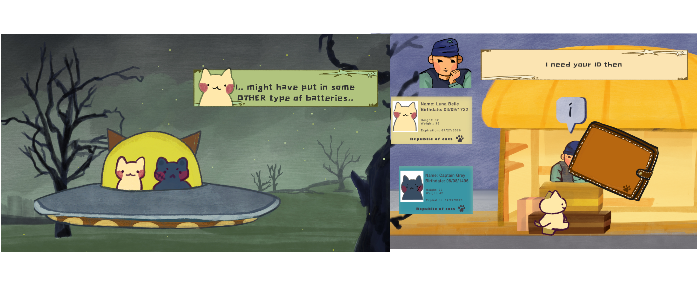
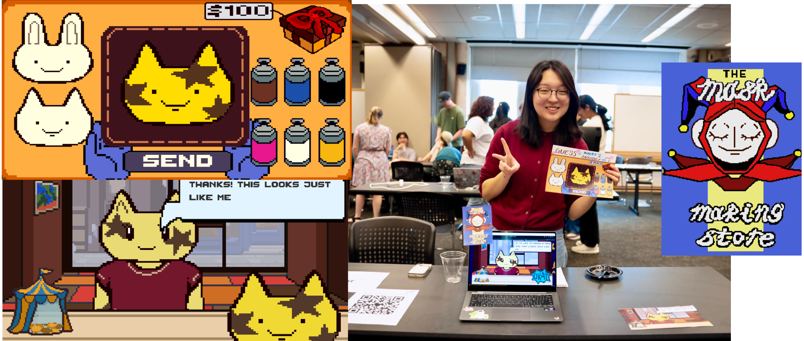
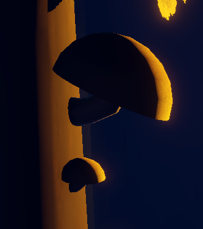
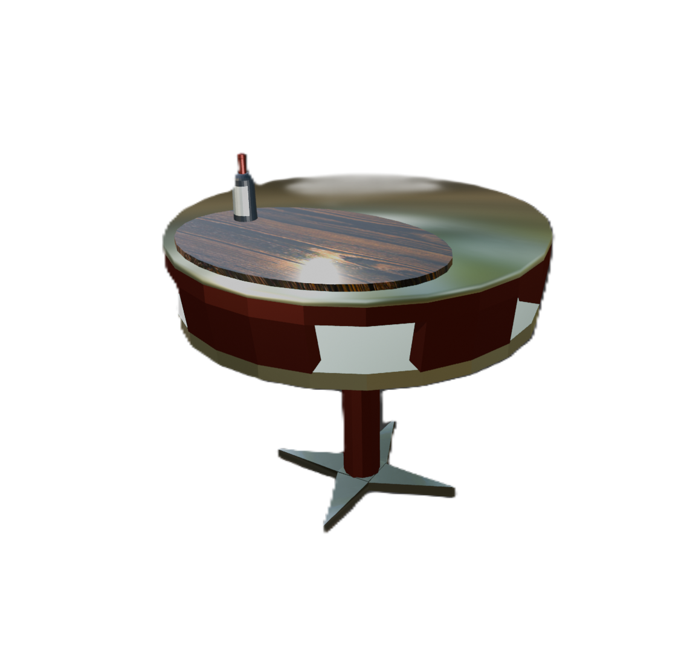
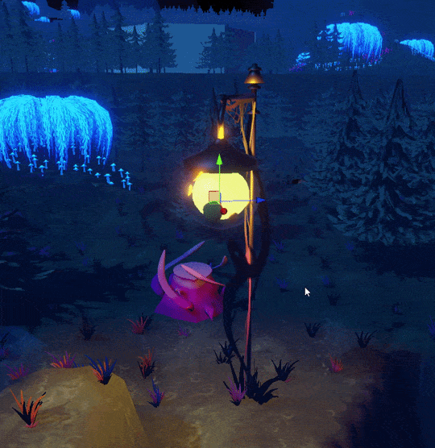
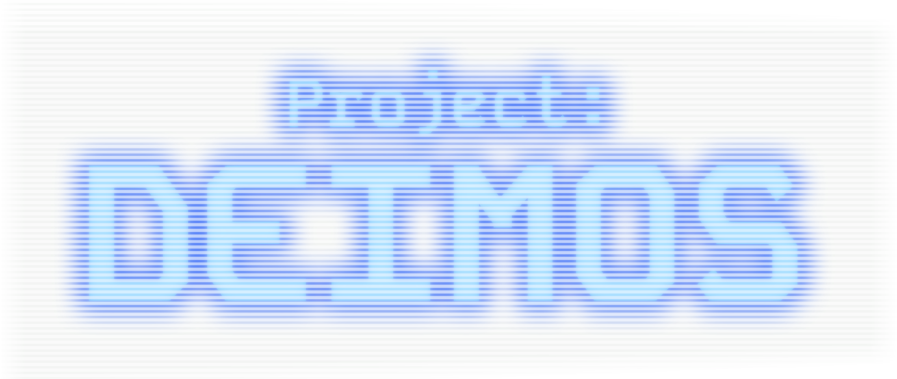
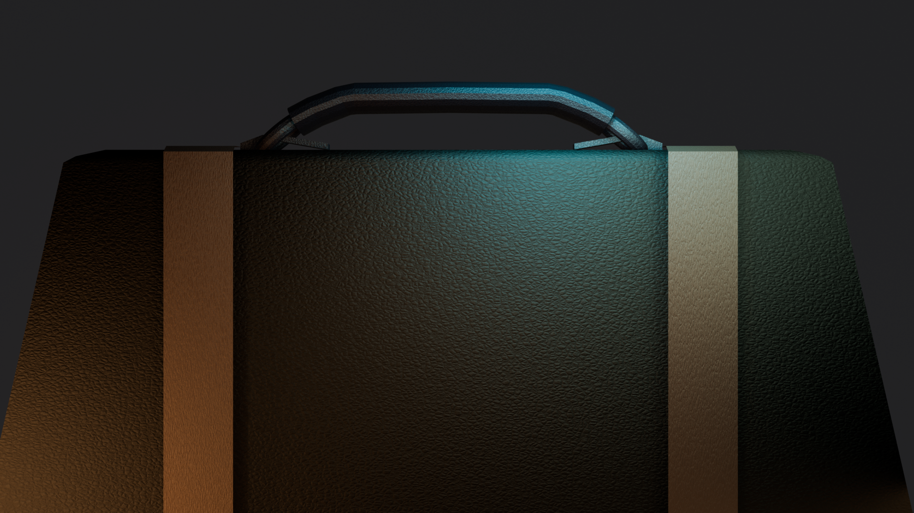
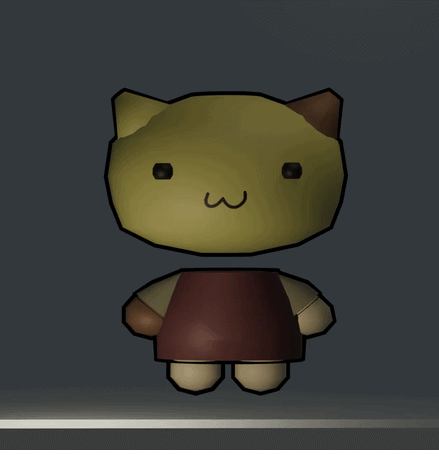
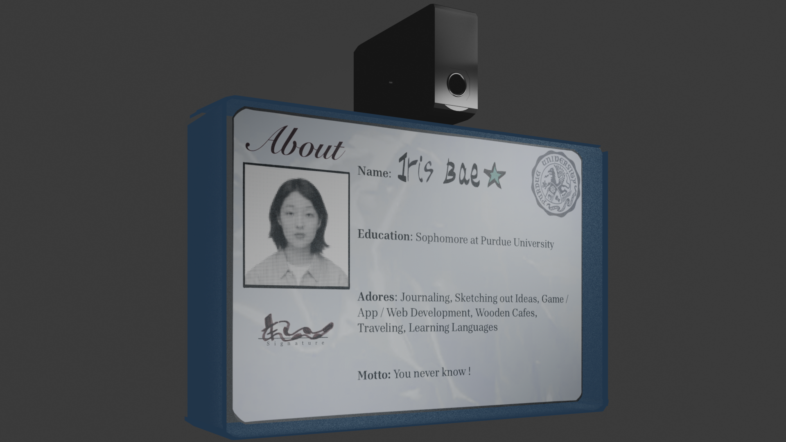

• Coordinated outreach between Student Associations and 50+ researchers for 130+ attendees
conference.
• Directed VR-Room accessibility for attendees and handled poster session logistics.

• Deployed modular solar array systems capable of generating 3.2kW,
successfully powering the Purdue University
Farmer’s Market for two weeks
• Designed, constructed, and stress-tested physical wind turbine structures to store renewable
energy.
• Currently coordinating outreach to sustainability clubs and creating artwork with club members
to organize an art gallery.
• Schedule meetings, assign each members adequate roles, and handle the organization of a
division within the club.

• Used government-licensed public APIs to receive real-time dining data; filtered raw JSON files
to deliver 7
entrees/day.
• Implemented Firebase Realtime Database to store ratings and process user feedback per unique
meal.
• Enrolled 13 beta test users in 3-week closed test to conform to Play Store testing
requirements.

• Built custom multimedia 2D interactive storytelling game in 4 days, averaging 34 players during
the 5-day playtest.
• Contains event-driven quest engine capable of tracking inventory requirements and updating
dialogue states.
• Placed top 5% in Narrative and top 7% in Artwork out of 10k entries in GMTK Game Jam, 2026

• 2D-Unity based matching puzzle game built in 2 days for Global Game Jam 2026; featuring main
gameplay loop
with deterministic score-based ending cinematics and embedded mini games.
• Presented in-booth amongst 26 other participants at the Fractal 2026 Showcase 100+ person
audience.
• Implemented dynamic dialogue behaviors based on user performance, character variations, and
scoring system.

• Currently working on the first demo for a future multiplayer pixel art game, about a kid and her dog trying to save a star from the king.
• Programmed a host-client sever so the game can be played by up to three players.




The assets above including some other small props were created for the Special Interest Group in Game Development Club (SIGGD) at Purdue University.
It was also the first semester that I had started gaining knowledge on Blender!

Since then, I've been creating my own 3D art assets to use in web development,
animations for 3D video games (this one is for a cafe themed game, to be done in Unreal Engine),


and for personal projects including this website!
Much more Projects are to be continued ...